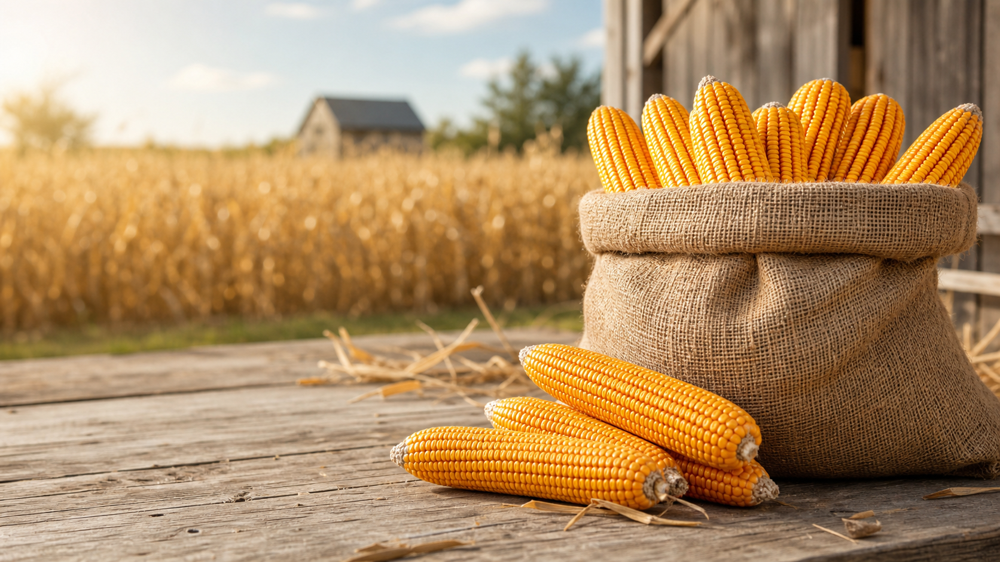

Most popular
Backyard feeder bag
20 lb Ear Corn Bag
Great for squirrel feeders, small wildlife stations, and customers who want an easy-to-carry bag of dried whole ear corn.
$16.00

Farm to Feeder
A direct farm-to-consumer concept built around simple bag sizes, clear availability, and an easy path from the field to the feeder.
Website direction
Because the old information site is currently unavailable, this prototype uses fresh placeholder copy and a direct sales structure. The tone leans into the familiar "farm to table" idea, but makes it specific to ear corn buyers: from Theo's Farm to backyard feeders, wildlife stations, and seasonal storage bins.
Online store
Backyard feeder bag
Great for squirrel feeders, small wildlife stations, and customers who want an easy-to-carry bag of dried whole ear corn.
Seasonal supply
For repeat buyers, acreage owners, and higher-volume seasonal wildlife feeding without jumping into a true bulk order.
The farm-to-feeder idea
Whole dried ear corn gives customers a recognizable, low-prep product they can place in feeders, storage bins, or seasonal stations. Theo's Farm can own a simple promise: grown close to home, packed clearly, and ready for the feeder.
Fulfillment concept
This prototype uses an inquiry-style checkout CTA. That lets Theo's Farm collect buyer intent, delivery addresses, and order details while final shipping zones, local delivery rules, and freight rates are confirmed.